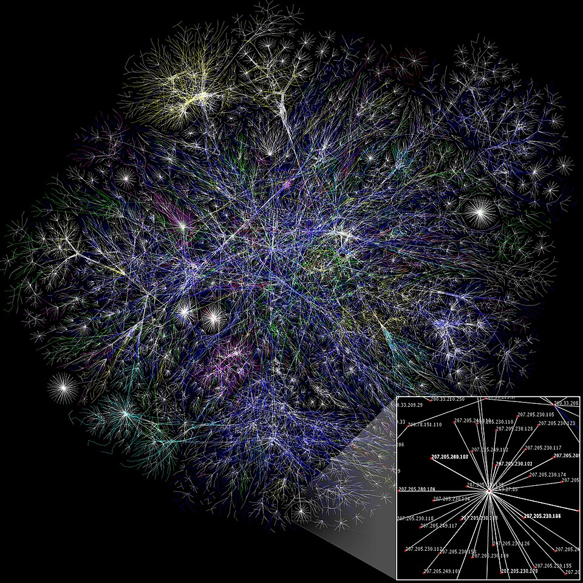

Dobrodošli
Internet predstavlja globalnu komunikacionu infrastrukturu. Ovaj sajt istražuje mehanizme koji omogućavaju funkcionisanje modernog društva.
Uvod
Internet je svetski sistem povezanih računarskih mreža koji je transformisao način na koji funkcionišu komunikacioni sistemi. Počeci interneta se vežu za stvaranje ARPANET-a 1969. godine, mreže računara pod kontrolom Ministarstva odbrane SAD. Danas internet povezuje milijarde računara širom sveta na jedan nehijerarhijski način. Internet je proizvod spoja medija, računara i telekomunikacija. Međutim, internet nije samo proizvod tehnološkog napretka, nego takođe društvenih i političkih procesa, uključujući naučnu zajednicu, politiku i vojsku. Od svojih korena kao jedno neindustrijsko i neposlovno okruženje vezano za naučnu zajednicu, Internet se vrlo brzo proširio na svet trgovine i poslovanja. Ipak, bilo je potrebno skoro 30 godina da se internet nametne kao tehnološka inovacija koja konstantno transformiše društvo i ekonomiju. Internet je javno dostupna globalna paketna mreža podataka koja povezuje računare i računarske mreže korišćenjem internet protokola (IP). To je "mreža svih mreža" koja se sastoji od miliona kućnih, akademskih, poslovnih i vladinih mreža koje međusobno razmenjuju informacije i usluge kao što su elektronska pošta, "ćaskanje" (eng. chat) i prenos datoteka te povezane stranice i dokumente World Wide Weba.
Pojam internet znači mreža unutar mreže, ili interna veza između više računara. Strukturno postoje male mreže koje se međusobno vezuju, i time čine ovu strukturu. Internet se sve više naziva globalnom mrežom informacija (velika internacionalna-globalna baza podataka). U 2014. godini broj internet korisnika premašio je 3 milijarde ili 43,6% svetske populacije (dve trećine korisnika došlo je iz najbogatijih zemalja i to 78,0% stanovništva iz Evrope, a 57,4% iz Amerike). Teško je proceniti pravu količinu informacija koju serveri obrađuju.

Internet se stalno menja.
Da biste saznali više, posetite
Vikipedijinu stranicu o internetu.